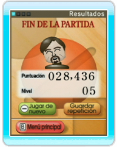

12 |
Fin de la partida |
 |
● Panel de resultados Cuando termines o pierdas la partida, podrás ver el panel de resultados. Si estabas jugando con un jugador registrado, tus tres mejores puntuaciones se guardarán automáticamente. Además, podrás seleccionar Guardar repetición para almacenar una repetición por cada modo de juego, es decir, Círculo (○), Barra (／), y Cuadrado (□). Podrás ver las repeticiones a través de Miis de repetición o seleccionando Repeticiones en el panel del menú principal. Nota: Si una repetición es demasiada larga, los primeros niveles no serán reproducidos. ● Pausar el juego Oprime
● Salir del juego Para salir del juego, abre el Menú HOME oprimiendo
|
 durante una partida para detenerla. Selecciona Continuar para seguir jugando o Reiniciar para empezar desde el principio.
durante una partida para detenerla. Selecciona Continuar para seguir jugando o Reiniciar para empezar desde el principio.
 ,
selecciona Menú de Wii y finalmente Sí para confirmar.
,
selecciona Menú de Wii y finalmente Sí para confirmar. |
 |
 |